רקע היסטורי
רקע היסטורי: יהודי בוקובינה ורומניה בימי משפחת רוזנר
מהמאה ה־19 ועד העלייה לישראל ב־1968
חייו של יצחק (ז׳אק) רוזנר עברו בתוך אחד הפרקים הסוערים בתולדות יהודי מזרח אירופה. הוא נולד ביאשי ב־1926, גדל בכפר מולדוביצה שבדרום בוקובינה, גורש ב־1941 לגטו שרגורוד שבטרנסניסטריה, שרד, ועלה לישראל ב־1968. הפרק הזה מתאר את הרקע ההיסטורי של חייו ושל חיי הוריו ליטמן ורגינה. כל פסקה מסתמכת על מקורות שמופיעים בסוף הסעיף, וכל מקום שבו ההיסטוריה פוגשת את סיפור המשפחה מסומן ומקושר לסיפורים שיצחק כתב בעצמו.
הערה: במקורות שונים מופיעים לעיתים מספרים שונים לאותו אירוע. במקרים כאלה מובאים כאן כל הנתונים, וליד כל אחד מהם המקור שלו.
1. בוקובינה ההבסבורגית (1775–1918)
בוקובינה, "ארץ האשורים", הייתה חלק מנסיכות מולדובה. ב־1774 כבש אותה הצבא האוסטרי, ובשנת 1775 היא סופחה רשמית לממלכת ההבסבורגים. בשנים 1786–1849 היא צורפה לגליציה, ומ־1849 הייתה ארץ כתר אוטונומית שבירתה צ׳רנוביץ. במפקד האוסטרי הראשון, ב־1775, נרשמו בה 526 משפחות יהודיות. השלטונות ניסו בתחילה להגביל את ההגירה היהודית, ואף גירשו מהגרים חדשים, אבל מספר היהודים גדל בהתמדה: 14,581 ב־1850 (3.8% מהאוכלוסייה), 67,418 ב־1880 ו־102,919 ב־1910 (12.9%).
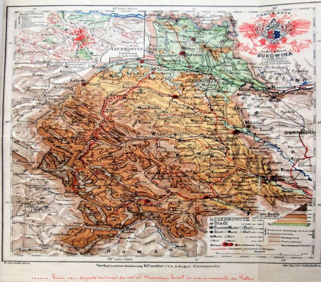
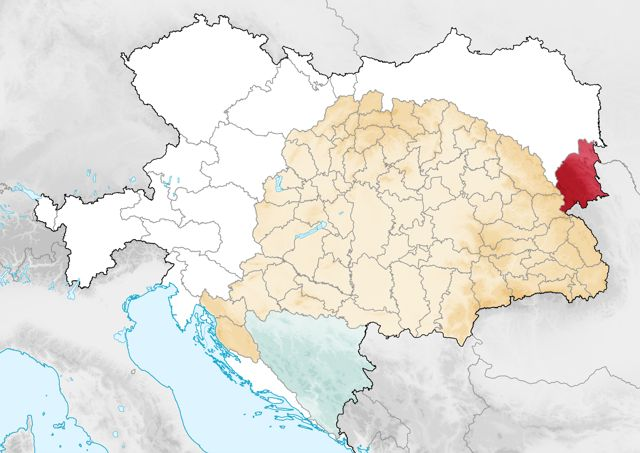
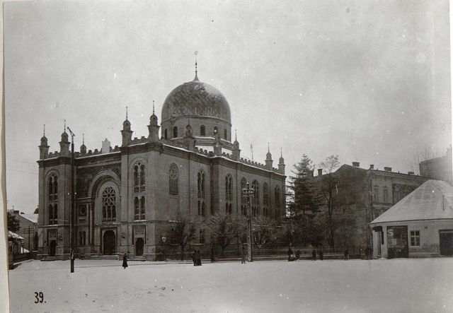
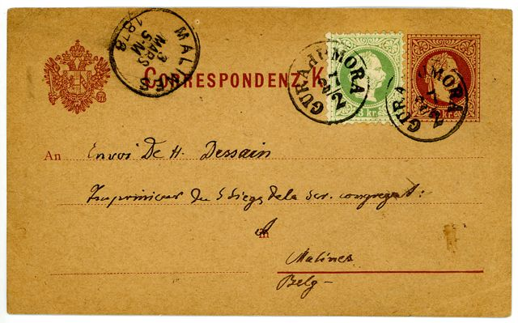
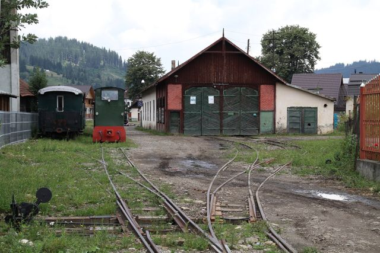
השוויון המלא שקיבלו יהודי אוסטריה ב־1867 פתח לפני יהודי בוקובינה עידן של צמיחה. לפי האנציקלופדיה יודאיקה, יהודים יזמו בבוקובינה את תעשיות העץ והמלט, והיו בולטים בסלילת מסילות הברזל ובבנקאות. ב־1906 שילמו יהודים כמעט מחצית ממסי המחוז. רבים מהם דיברו גרמנית ושלחו את ילדיהם לבתי ספר גרמניים. לצד זאת נשארה החסידות חזקה, בעיקר חסידות סדיגורה, ויז׳ניץ ובויאן. הציונות הגיעה למחוז בסוף המאה ה־19, ובוקובינה שלחה שלושה צירים לקונגרס הציוני הראשון ב־1897.
עצים ונהרות בדרום בוקובינה. בעיירות הדרום, שבהן עברו חיי המשפחה, הייתה תעשיית היער מרכז הפרנסה. בגורה הומורולוי התיישבו יהודים ברצינות רק מ־1835. בתחילה עבדו כבעלי מלאכה, כסוחרים וכספקים לצבא האוסטרי, ובהמשך הקימו בתי מלאכה לעיבוד עץ ומנסרות. הקהילה מנתה 190 נפשות ב־1867 ו־2,050 ב־1910. בווטרה דורניי קשור הנוכחות היהודית המוקדמת להקמת המנסרות הראשונות, כלומר לראשית תעשיית היער. בקימפולונג (Câmpulung Moldovenesc) הוקמה קהילה עצמאית ב־1859, וערב מלחמת העולם הראשונה חיו בעיר ובכפרים שסביבה כ־3,500 יהודים. במולדוביצה עצמה, שנקראה אז Rușii-Moldoviței, פעלו מנסרות. דיווח מ־1916, שמצוטט במחקר רומני, מתאר שם "מפעל גדול עם שתים־עשרה מסורים", ובשנת 1897 הוקם בכפר גם מפעל לזיקוק עץ. בית הקברות היהודי של מולדוביצה, שמצבותיו כתובות עברית וגרמנית, מתוארך למאה ה־19.
ובמשפחה: סבו של יצחק, יצחק רוזנר הזקן, נולד לפי הרישום ב־Geni ב־1850 בפוטילה שבצפון בוקובינה, ואביו ליטמן נולד ב־1886 בקיסליצה, "באימפריה האוסטרו־הונגרית", כפי שכתב יצחק במצגת המשפחתית. הסבתא חיה שרף־רוזנר נקברה במולדוביצה (עץ המשפחה ב־Geni).
מקורות: YIVO – Bucovina · Encyclopaedia Judaica / Jewish Virtual Library – Bukovina · JBAT (Leo Baeck Institute) – Gura Humorului · JBAT – Vatra Dornei · YIVO – Câmpulung Moldovenesc · Analele Bucovinei 2024 – Industria lemnului în Bucovina (PDF, רומנית) · JewishGen – בית הקברות במולדוביצה · JewishGen KehilaLinks – Bukovina
2. יאשי: עיר ההולדת
יאשי, בירת נסיכות מולדובה, הייתה אחד המרכזים היהודיים החשובים ברומניה. ב־1859 היו היהודים 47.1% מתושבי העיר, וב־1899 מנו 39,441 נפש, יותר ממחצית האוכלוסייה. ב־1876 התקיימה ביאשי ההופעה הראשונה של התיאטרון היידי של אברהם גולדפדן, והעיר הייתה למרכז של ספרות יידיש. מצד שני, האוניברסיטה של יאשי הייתה מוקד של אנטישמיות. הכלכלן אלכסנדרו ק. קוזה לימד בה, וב־1923 נוסדה "הליגה להגנה לאומית־נוצרית" שבראשה עמד קוזה. ב־1930 חיו בעיר 35,465 יהודים (34.4%).
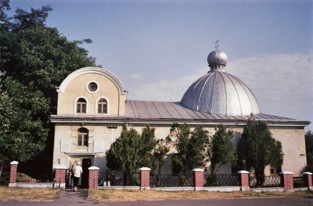
ברומניה הישנה ("הרגאט") נמנעה אזרחות מרוב היהודים לאורך כל המאה ה־19. סעיף 7 בחוקה של 1866 שמר את האזרחות לנוצרים בלבד. בין 1880 ל־1913 קיבלו אזרחות רק 529 יהודים, ורק הסכמי המיעוטים של 1919 והחוקה של 1923 העניקו ליהודי רומניה זכויות אזרח מלאות.
ובמשפחה: יצחק נולד ביאשי ב־25 בנובמבר 1926, כך לפי מסמכיו הישראליים. אמו, רגינה מרקוביץ׳, נולדה ב־1898 בבורדוז׳ן שליד סוצ׳אבה.
מקורות: YIVO – Iași · YIVO – Romania · Jewish Virtual Library – Romania
3. מלחמת העולם הראשונה ו"רומניה הגדולה" (1914–1930)
במלחמת העולם הראשונה פלש הצבא הרוסי לבוקובינה וכבש אותה, ומשפחות יהודיות רבות ברחו מחשש לרדיפות. מחקר רומני מתאר איך פירקו הרוסים ב־1916 את המנסרות של מולדוביצה ושלחו את המכונות לרוסיה. בנובמבר 1918 נכנס הצבא הרומני לבוקובינה, והמחוז סופח לרומניה, צעד שאושר בהסכם סן־ז׳רמן. הנציגים היהודים שמרו על ניטרליות ולא תמכו באיחוד. בתוך רומניה איבדה בוקובינה את האוטונומיה שלה, וחולקה למחוזות, ובהם מחוז קימפולונג, שאליו השתייכה מולדוביצה (כך גם בכותרת אישור העירייה של מולדוביצה מ־1948). ב־1930 חיו בבוקובינה 92,232 יהודים (10.8%). הם הוכרו כמיעוט לאומי, אבל נשחקו בהדרגה תחת מדיניות "הרומניזציה" והאנטישמיות הגוברת.
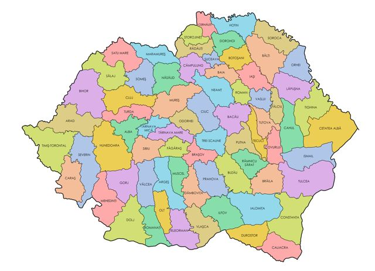
ובמשפחה: ליטמן גויס ב־1912 לצבא האוסטרי, ובשנת 1916 נפל בשבי הרוסים. כשהוחזר ב־1918, "בוקובינה, מולדתו, כבר לא הייתה באוסטריה אלא ברומניה". בווינה הוא פגש את רגינה, "פליטה צעירה מבוקובינה". הם נישאו ב־1922, וב־1923 חזרו להתיישב במולדוביצה ליד אחותו פאני וסרמן (מתוך ההערות של יצחק במצגת המשפחתית "RW Family").
מקורות: YIVO – Bucovina · YIVO – Romania · Analele Bucovinei 2024 (PDF)
4. שנות ה־30: גוגה־קוזה, משמר הברזל וביטול האזרחות
בשנות ה־30 התחזק הימין הקיצוני ברומניה. "משמר הברזל" ("הלגיון") הפשיסטי זכה לתמיכה עממית רחבה, ולצידו פעלה המפלגה הלאומית־נוצרית של אוקטביאן גוגה ואלכסנדרו ק. קוזה. בדצמבר 1937 הקים גוגה ממשלה, וזו החלה מיד לחוקק נגד היהודים. החשוב שבחוקים היה צו־חוק מס׳ 169 מינואר 1938, "בדיקת האזרחות מחדש": כל יהודי נדרש להוכיח מחדש, בתוך 40 יום, את זכותו לאזרחות. ממשלת גוגה נפלה כעבור כ־40 יום, בין היתר בעקבות חרם כלכלי של היהודים ולחץ בינלאומי, אבל החוק נשאר בתוקף תחת הדיקטטורה המלכותית של קרול השני. בסוף התהליך נשללה האזרחות מ־225,222 יהודים, כלומר מ־73,253 משפחות. למעשה ביטל החוק את האזרחות שניתנה ליהודים מאז מלחמת העולם הראשונה, ולכן פגע גם ביהודי בוקובינה, שהפכו לאזרחי רומניה רק אחרי 1918.
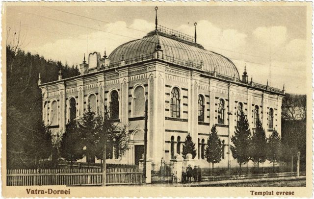
ובמשפחה: בשנים האלה גדל יצחק כילד במולדוביצה. הוא כתב על שחקני "מכבי מולדוביצה" ועל המשחק מול "מכבי קימפולונג" בקיץ 1937 (מכבי מולדוביצה נגד מכבי קימפולונג), ועל הבית ועל ליאו שנאפ, שנעצר כ"קומוניסט" (מי אני? וליאו שנאפ).
מקורות: הדו״ח הסופי של הוועדה הבינלאומית לחקר השואה ברומניה (ועדת ויזל), פרק 1 (PDF) · יד ושם – בוקובינה (עברית, PDF) · YIVO – Romania · USHMM – Romania · Jewish Virtual Library – Romania
5. 1940: הסיפוח הסובייטי, חוקי הגזע והגירוש מהכפרים
ב־26 ביוני 1940 דרשה ברית המועצות את בסרביה ואת צפון בוקובינה, וב־28 ביוני נכנעה רומניה. צ׳רנוביץ עברה לשלטון הסובייטי, ובוקובינה נחצתה לשניים. הצבא הרומני הנסוג האשים את היהודים באהדה לקומוניזם, ובדרך נרצחו עשרות יהודים. בצפון בוקובינה הגלו הסובייטים ביוני 1941 כ־3,800 עד 4,000 יהודים לסיביר, כ"בורגנים" וכ"אויבי העם".
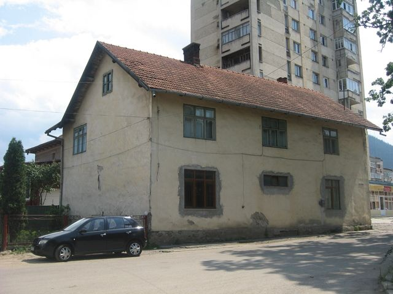
ב־9 באוגוסט 1940 פרסמה ממשלת גיגורטו את צו־החוק מס׳ 2650, שהגדיר יהודים לפי "דם" ובהשראת חוקי נירנברג. הצו הוציא יהודים ממשרות ציבוריות וממקצועות רבים, ואסר עליהם להחזיק ברכוש כפרי או לעסוק בפעילות כלכלית בכפרים. בספטמבר 1940 עלה לשלטון גנרל יון אנטונסקו יחד עם משמר הברזל, והוכרזה "המדינה הלאומית־לגיונרית". באוקטובר עד דצמבר 1940 גירשו מפקדי הלגיון יהודים מעשרות כפרים שבהם חיו יותר ממאה שנה, והפכו אותם לפליטים בערי המחוז. ביום הכיפורים, 12 באוקטובר 1940, התקיים בקימפולונג "יום טרור": חיילים, שוטרים ולגיונרים בזזו בתים יהודיים, והרב יוסף רובין עונה, הושפל ונרתם לעגלה. חוקי הרומניזציה הפקיעו בסופו של דבר מיהודים, בין השאר, 47,455 הקטאר של יערות.
ובמשפחה: יצחק כתב ש"בקיץ 1940… חוקק חוק שלפיו אסור ליהודים לגור בכפרים". המשפחה קיבלה שלושה ימים לעזוב את מולדוביצה, הבית ננעל ונחתם בנוכחות שני שוטרים מהמשטרה הלגיונרית, והם עברו לגורה הומורולוי, אל קרובי האם ממשפחת אלנבוגן. עסק העצים של ליטמן, שייצא עד אז בעיקר לבריטניה ולארץ ישראל, חויב לייצא לגרמניה (שארגורוד – הפרק הראשון).
מקורות: ועדת ויזל – תקציר מנהלים (PDF) · ועדת ויזל, פרק 1 – צו־חוק 2650 (PDF) · ועדת ויזל, פרק 5 – גירוש יהודי הכפרים והטרור בקימפולונג (PDF) · YIVO – Câmpulung Moldovenesc · יד ושם – בוקובינה (עברית, PDF) · USHMM – Romania
6. 1941: פוגרום בוקרשט, פוגרום יאשי והרציחות בצפון
בינואר 1941 מרד משמר הברזל באנטונסקו, ובמהלך המרד ערכו הלגיונרים פוגרום רצחני ביהודי בוקרשט. ב־22 ביוני 1941 הצטרפה רומניה לפלישה הגרמנית לברית המועצות. כבר ב־28 ביוני החל ביאשי, עיר הולדתו של יצחק, פוגרום שתכננו רשויות המדינה. חיילים רומנים וגרמנים, שוטרים ותושבים רצחו יהודים בבתים וברחובות, וב־29 ביוני, "יום ראשון השחור", נורו אלפים בחצר מפקדת המשטרה. כ־4,300 ניצולים נדחסו ל"רכבות המוות", ושם מתו כ־2,600 מצמא ומחנק. על מספר הנרצחים אין הסכמה: מוזיאון השואה בוושינגטון כותב "לפחות 4,000" בעיר עצמה; לפי יד ושם דיווחה המשטרה לאנטונסקו על יותר מ־8,000, ובית המשפט ב־1948 קבע שנרצחו יותר מ־10,000; YIVO מעריך כ־14,000 קורבנות, כולל הרכבות.
⚠ צילום היסטורי קשה לצפייה – לחצו להצגה
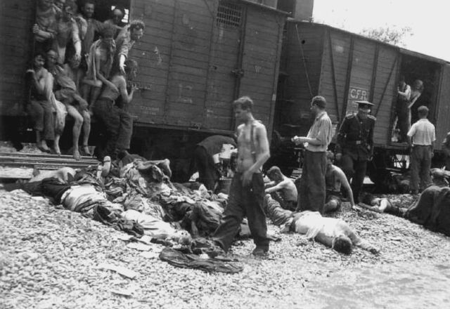
בצפון בוקובינה, שנכבשה מחדש, נרצחו ביולי 1941 כ־15,000 יהודים. ב־18 ביוני 1941 הורה אנטונסקו לרכז את יהודי הכפרים והעיירות הקטנות בערי המחוז.
מקורות: יד ושם – פוגרום יאשי, יוני 1941 · יד ושם – מערך שיעור על פוגרום יאשי · USHMM – Romania · YIVO – Iași · יד ושם – בוקובינה (עברית, PDF)
7. הגירוש מדרום בוקובינה, אוקטובר 1941
את יהודי דרום בוקובינה לא גירשו בגלל עבירה כלשהי. הם מעולם לא חיו תחת שלטון סובייטי. ועדת ויזל קבעה שהגירוש היה תוצאה של החלטת שני האנטונסקו, יון ומיהאי, על "טיהור אתני", כפי שמתועד בפרוטוקולים של ישיבות הממשלה מ־25 ביוני ומ־6 באוקטובר 1941. הגירוש התחיל ב־9 באוקטובר 1941 בסוצ׳אבה, וב־10 באוקטובר יצאה רכבת מגורה הומורולוי. לפי האנציקלופדיה יודאיקה גורשו מגורה הומורולוי ביום אחד 2,954 יהודים, תושבי העיר ופליטים מהכפרים שסביבה. לוח הזיכרון בבית הכנסת בעיר מזכיר כ־3,000 מגורשים ב־10 וב־11 באוקטובר. מקימפולונג יצאו המשלוחים ב־12 וב־13 באוקטובר, ורק 28 יהודים "חיוניים" הורשו להישאר. מווטרה דורניי גורשו כולם, חוץ מ־21 נפשות. ועדת ויזל מעריכה את מספר המגורשים מדרום בוקובינה ב־1941–1942 ב־21,229, ומכון "אלי ויזל" כותב על "יותר מ־26,000".
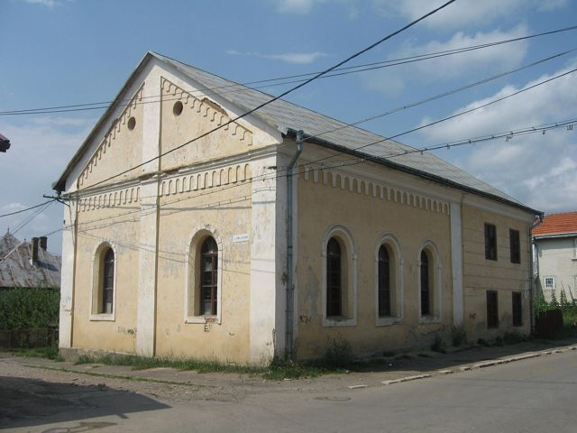
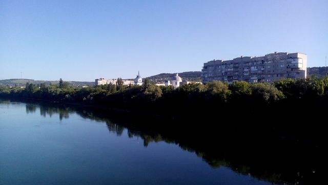
הרכבות הגיעו לאטאקי (Atachi), על הגדה המערבית של הדניסטר. שם שדדו את המגורשים פקידי הבנק הלאומי, ז׳נדרמים וחיילים. הם נחצו את הנהר ברפסודות או בגשר צף אל מוגילב (Mohyliv-Podilskyi), וחלקם טבעו. ממוגילב נשלחו בשיירות לגטאות שרגורוד, קופייגורוד, מורפה וג׳ורין. תעודות הזהות של רבים מהם נשרפו בנקודות המעבר, כדי שיגיעו לטרנסניסטריה בלי זהות.
ובמשפחה: לפי זיכרונותיו, ב־8 באוקטובר 1941 נצטוו כל יהודי גורה הומורולוי להתייצב למחרת, ב־9 באוקטובר בשעה 10:00, בתחנת הרכבת, כל אחד עם חבילה אחת. אמו, גינה, תפרה בתוך מעילה 220,000 לאי שאביו הכין מראש. הטקסט שכתב נקטע ברגע ההמתנה לרכבת (שארגורוד · Shargorod, English). אישור מעיריית מולדוביצה מ־1948 מעיד שגורש עם הוריו לטרנסניסטריה באוקטובר 1941 (המסמך).

פער בתאריך הגירוש: ביומן ובסיפור שכתב ("שארגורוד") נאמר שההתייצבות בתחנה הייתה ב־9 באוקטובר 1941, ואילו לפי המקורות ההיסטוריים (JBAT, האנציקלופדיה יודאיקה ולוח הזיכרון בבית הכנסת) הרכבת מגורה הומורולוי יצאה ב־10 באוקטובר 1941. בעדות ליד ושם (2009) הוא אמר: "בתשיעי לאוקטובר קיבלנו הוראה... בעשירי לאוקטובר לבוא" (חלק א׳, 56:02). התאריך המדויק טרם הוכרע.
מקורות: ועדת ויזל, פרק 5 (PDF) · JBAT – Gura Humorului · JewishGen – ספר יזכור גורה הומורולוי · YIVO – Câmpulung Moldovenesc · roholocaust.com – הגירוש מקימפולונג · JBAT – Vatra Dornei · מכון "אלי ויזל" – רישום שמות הקורבנות · Marcu Rozen – הגירוש מדרום בוקובינה (עדויות)
8. טרנסניסטריה וגטו שרגורוד (1941–1944)
"טרנסניסטריה", כלומר "מעבר לדניסטר", היה השם שנתנה רומניה לשטח שבין הדניסטר לבוג. היטלר מסר אותו לרומניה, ולפי הסכם טיגינה מ־30 באוגוסט 1941 הוא נוהל בידיה. המגורשים מבוקובינה ומבסרביה רוכזו בגטאות ובמחנות בלי מזון, בלי דיור ובלי טיפול רפואי, וחלה עליהם חובת עבודת כפייה. החורף של 1941/42 היה הקשה מכולם, ועשרות אלפים מתו מרעב, מקור, מטיפוס הבהרות ומדיזנטריה. מתוך כ־145,000 עד 150,000 המגורשים מרומניה נספו כ־90,000. מוזיאון השואה בוושינגטון מעריך שבטרנסניסטריה נרצחו בסך הכול 280,000 עד 380,000 יהודים, ורבים מהם היו יהודים מקומיים מאוקראינה.
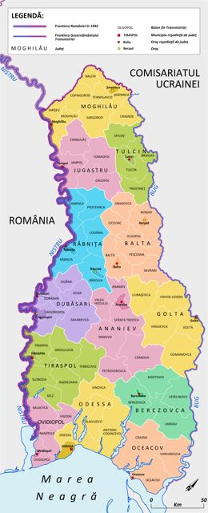
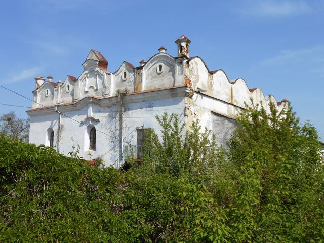
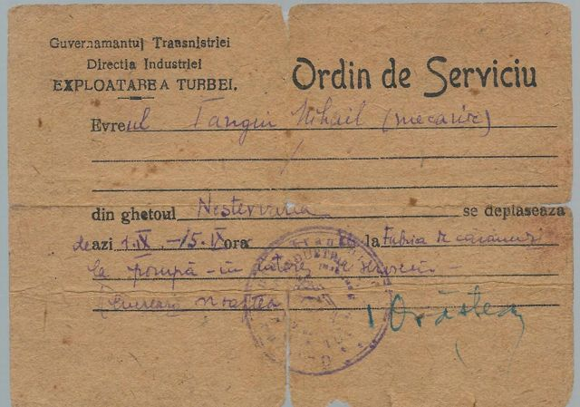
שרגורוד. שרגורוד (Shargorod, היום Sharhorod באוקראינה) הייתה עיירה יהודית ותיקה, ובה בית כנסת מבוצר מפואר. הגרמנים כבשו אותה ב־22 ביולי 1941, ובספטמבר צורפה לטרנסניסטריה, למחוז מוגילב. ערב המלחמה חיו בה כ־1,660 יהודים. בסתיו 1941 הגיעו אליה אלפי מגורשים: לפי יד ושם כ־3,000 בתחילת אוקטובר, ולפי האנציקלופדיה יודאיקה כ־5,000 באוקטובר ובנובמבר. רובם היו מבוקובינה, ובמיוחד מסוצ׳אבה. בנובמבר 1941 הוקמה מועצה יהודית משותפת, ובראשה מאיר טייך מסוצ׳אבה. המועצה ארגנה מטבח ציבורי שחילק 1,500 ארוחות ביום, תנורי חיטוי, בית מרחץ, בית חולים של 100 מיטות (בפברואר 1942), בית חרושת לסבון, בית מרקחת ובית יתומים ל־600 ילדים. לפי ועדת ויזל חלו בטיפוס 2,414 מתוך כ־9,000 יהודי שרגורוד, ו־1,449 מהם מתו. הערכות אחרות נעות בין כ־1,400 (יד ושם) ל־4,000 (ההיסטוריון ז׳אן אנסל). כמחצית מהרופאים בגטו מתו בעצמם. ב־30 ביוני 1942 פוזרו כאלף יהודים לכפרים בסביבה. בספטמבר 1943 נותרו בגטו 2,731 יהודים מבוקובינה ו־240 מבסרביה.
ובמשפחה: בשיחה משפחתית מוקלטת תיאר יצחק את ההליכה לשרגורוד בנובמבר 1941, את החדר אצל סוניה שטרקמן שבו גרו ארבע נפשות, את המים שנשאו ממעיין במרחק כשלושה קילומטרים, את עבודת הכפייה בז׳נדרמריה, את הרעב ואת הטיפוס (שיחה על שרגורוד). הוא גם שרטט את הדירה בגטו וסימן על מפה את בתי משפחות וסרמן, רוזנר וצימרמן. ב־2013 כתב קטע קצר על חבר שהלך ורזה עד שבשבת אחת כבר לא היה (החבר הנעלם). יצחק (Isaak) שרף, שהיה מראשי המועצה היהודית בגטו לצד מאיר טייך (Nationalities Papers), השתייך למשפחת שרף הקשורה למשפחתנו; אחד מבניו מילא אחר כך תפקיד בכיר בממשלת ישראל הראשונה (אישור המשפחה, 9.11.2026).
מקורות: יד ושם – אנציקלופדיית הגטאות: שרגורוד (עברית) · יד ושם – טרנסניסטריה (עברית, PDF) · Encyclopaedia Judaica / JVL – Shargorod · ועדת ויזל, פרק 5 (PDF) · Nationalities Papers – Institutions for survival: The Shargorod ghetto · USHMM – Transnistria Governorate · YIVO – Transnistria
9. שחרור וחזרה (1944–1945)
ככל שהתקרב הצבא האדום, התירו השלטונות הרומניים חזרה חלקית. בדצמבר 1943 הוחזרו ניצולי דורוהוי, ובמרץ 1944 יתומים. רק ב־14 במרץ 1944 הסכים אנטונסקו להחזרת כל המגורשים, אבל ההחלטה באה מאוחר מדי, ובמחצית השנייה של מרץ 1944 הוחזרו באורח מאורגן רק כ־2,500 איש. הצבא האדום שחרר את שרגורוד ב־20 במרץ 1944. ב־23 באוגוסט 1944 הדיח המלך מיכאל את אנטונסקו, ורומניה חתמה על שביתת נשק עם ברית המועצות. אנטונסקו הוצא להורג ב־1946. בשרגורוד עצמה עצרו הסובייטים ב־1944 את ראשי המועצה היהודית, ובהם מאיר טייך, והעמידו אותם לדין על "שיתוף פעולה". הסכם שביתת הנשק והסכם השלום מ־1947 קבעו מחדש את גבול 1940, כך שצפון בוקובינה נשארה בברית המועצות. מגורשים רבים מדרום בוקובינה חזרו לעריהם בסוף 1944 ובראשית 1945, ורובם עזבו כעבור שנים מעטות ועלו לישראל.
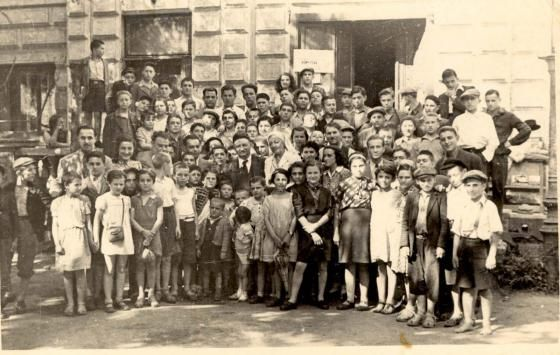
ובמשפחה: על מועד השחרור והיציאה משרגורוד יש גרסאות שונות: בסיפור הכתוב נאמר שהמשפחה נשארה שם עד סוף מאי 1944; בעדות מ־2009 (חלק ב׳, 03:52) אמר יצחק שהשחרור היה ב־21 במרץ, "בדיוק ביום הראשון של האביב"; לפי המקורות ההיסטוריים שוחרר שרגורוד ב־20 במרץ 1944. התאריך המדויק של יציאת המשפחה אינו ידוע. משם יצאו לצ׳רנוביץ עם משפחת וסרמן, נשדדו בדרך, ויצחק נמלט מגיוס לעבודה במכרות והגיע לבוטושאני. אישור רשמי מ־1946 מעיד שבין 15 ביולי ל־15 באוקטובר 1944 שימש מתורגמן ב"הנהגה המיוחדת של החזית האוקראינית השנייה" של הצבא האדום (המסמך). לפי אישור העירייה, הוא והוריו חזרו למולדוביצה במאי 1945 (המסמך).

מקורות: ועדת ויזל – תקציר מנהלים (PDF) · YIVO – Transnistria · יד ושם – אנציקלופדיית הגטאות: שרגורוד · USHMM – Romania · Journal of Modern European History – משפטי מועצת גטו שרגורוד · YIVO – Bucovina · יד ושם – בוקובינה (עברית, PDF)
10. רומניה הקומוניסטית והעלייה (1945–1968)
בסוף המלחמה חיו ברומניה, לפי הערכות שונות, בין כ־350,000 (לפי יואניד) לכ־430,000 (לפי YIVO) יהודים. זו הייתה הקהילה היהודית הגדולה ביותר שנותרה באירופה מחוץ לברית המועצות. בשנים 1944–1947 יצאו מנמלי רומניה 14 ספינות מעפילים עם כ־24,000 עולים. מגורה הומורולוי יצאה בספטמבר 1947 קבוצה ראשונה של 140 עולים דרך קפריסין, ובשנים 1948–1951 עזבו את העיר כמעט כל יהודיה. המשטר הקומוניסטי פירק בשנים 1948–1949 את התנועה הציונית והלאים את בתי הספר היהודיים, ובין אפריל 1952 ל־1956 עצר כמעט לגמרי את ההגירה. מקום המדינה ועד סוף שנות ה־60 עלו לישראל יותר מ־200,000 יהודים מרומניה, וב־1965 נותרו בה כ־100,000. מאחורי הקלעים, כפי שתיאר ההיסטוריון ראדו יואניד, "קנתה" ישראל אשרות יציאה: בשנות ה־50 וה־60 בעסקאות חליפין של ציוד חקלאי ותעשייתי, ומ־1969 תמורת מזומנים. ב־1967 הייתה רומניה המדינה היחידה בגוש המזרחי שלא ניתקה את יחסיה עם ישראל.
ובמשפחה: ב־1945 למד יצחק בפוליטכניקה בבוקרשט ועבד בחלוקת עיתונים, ואז פגש לראשונה את בן דודו ביבי רוזנר־בויקו (המפגש עם ביבי). בשנות ה־50 היה קצין צעיר בבוקרשט (הליכת בוקר לעבודה). בפברואר 1968 קיבל, בשם "אדריאן רושקה", תעודת מסע רומנית "לחסרי אזרחות" (המסמך). הוא עבר בווינה ונחת בלוד ב־15 במאי 1968, וב־4 באוגוסט 1968 שינה רשמית את שמו ליצחק רוזנר.

מקורות: Encyclopaedia Judaica / JVL – Romania (פרק "Contemporary Period") · YIVO – Romania · JBAT – Gura Humorului · JewishGen – ספר יזכור גורה הומורולוי · The Forward – על ספרו של ראדו יואניד "The Ransom of the Jews"
מקורות מומלצים להמשך קריאה ומחקר
כל הקישורים נבדקו ונטענו בהצלחה ב־9 בנובמבר 2026. רוב המקורות באנגלית, ומקורות בעברית מסומנים ב־(עברית).
מקורות־על (מומלצים במיוחד)
- הדו״ח הסופי של הוועדה הבינלאומית לחקר השואה ברומניה (ועדת ויזל, 2004), בהוצאת יד ושם, דף הדו״ח וכל הפרקים. זה המחקר הרשמי והמקיף ביותר על השואה ברומניה. פרקים חשובים במיוחד: פרק 1, שורשי האנטישמיות, גוגה־קוזה וביטול האזרחות; פרק 5, השואה ברומניה, כולל הגירוש מדרום בוקובינה ושרגורוד; תקציר מנהלים.
- יד ושם, אנציקלופדיית הגטאות: שרגורוד (עברית), קישור. תיאור מפורט של הגטו שבו חי יצחק: המועצה היהודית, המאבק בטיפוס, בית היתומים והשחרור ב־20 במרץ 1944.
- יד ושם, מרכז המידע: "בוקובינה" (עברית, PDF), קישור, וגם "טרנסניסטריה" (עברית, PDF), קישור. ערכים תמציתיים ובהירים בעברית.
- YIVO Encyclopedia of Jews in Eastern Europe: Bucovina, Romania, Iași, Transnistria, Câmpulung Moldovenesc, Vatra Dornei. ערכים אקדמיים מצוינים, עם נתוני אוכלוסייה לאורך הדורות.
- USHMM Holocaust Encyclopedia (מוזיאון השואה בוושינגטון): Romania, Transnistria Governorate, ומפת הגירושים לטרנסניסטריה 1941–1942.
הקהילות של המשפחה
- The Archives of Jewish Bukovina & Transylvania (JBAT), מכון לאו בק: Gura Humorului, Câmpulung Moldovenesc, Vatra Dornei, דף הבית. רקע היסטורי לכל עיירה, וקטלוג של תיקי ארכיון ברומניה. אפשר לחפש בו מסמכים על המשפחה.
- JewishGen, ספר יזכור גורה הומורולוי (רשימת נספים, A–B), קישור. כולל את מספרי הגירוש של 10 באוקטובר 1941 ואת העליות של 1947.
- JewishGen, בית הקברות היהודי במולדוביצה, קישור. מצב בית הקברות שבו קבורה הסבתא חיה שרף־רוזנר, וההפניה לספרו של סימון גייסבולר על בתי הקברות של בוקובינה.
- JewishGen KehilaLinks: Bukovina, קישור. שער למשאבים גנאלוגיים על בוקובינה, ובהם מפות, מאגרי לידות ופטירות וספרי יזכור.
- הארגון העולמי של יהודי בוקובינה (עברית), דף שרגורוד, דף הבית. ארגון יוצאי בוקובינה בישראל, עם רשימת המחנות והגטאות בטרנסניסטריה.
- Encyclopaedia Judaica באתר Jewish Virtual Library: Bukovina, Shargorod, Romania. הערך על רומניה כולל פרק מפורט על התקופה הקומוניסטית ועל העלייה עד סוף שנות ה־60.
מחקרים ועדויות
- "Institutions for survival: The Shargorod ghetto", Nationalities Papers (Cambridge), קישור. מחקר עדכני על החיים בגטו שרגורוד, עם ההערכות השונות לגבי מספר מתי הטיפוס.
- Wolfgang Schneider, "From the ghetto to the Gulag, from the ghetto to Israel", Journal of Modern European History, 2019, קישור. על המשפטים הסובייטיים שנערכו ב־1944 לראשי המועצה היהודית בשרגורוד, מאיר טייך ו־Isaak Sherf (גישה בתשלום, התקציר חופשי).
- המכון הלאומי לחקר השואה ברומניה "אלי ויזל": רישום שמות הקורבנות, קישור. מאגר שמות ורקע על הגירושים. כדאי לחפש בו שמות מהמשפחה המורחבת.
- roholocaust.com: הגירוש מקימפולונג, קישור. תיאור המסלול לאטאקי, השוד והמעבר בדניסטר.
- Marcu Rozen, "The Holocaust in Romania under the Antonescu Government", פרק הגירוש מדרום בוקובינה, קישור. עדויות מסוצ׳אבה, מאטאקי ומרדאוץ.
- Ovidiu Bâtă, "Industria lemnului în Bucovina", Analele Bucovinei, 2024 (רומנית, PDF), קישור. על תעשיית העץ בבוקובינה ועל המנסרות של מולדוביצה, הרקע לעסק העצים של ליטמן.
- יד ושם, פוגרום יאשי: דף היסטורי, מערך שיעור עם עדויות, ערך מרכז המידע (PDF).
- יד ושם, סביבת למידה: השואה ברומניה, בסרביה, בוקובינה וטרנסניסטריה (עברית), השואה בבסרביה.
- יד ושם, טרנסניסטריה: סיפורים מאחורי פריטים באוסף החפצים, קישור.
- JewishGen, Transnistria: Jews Receiving and Sending Support, קישור. מאגר שמות של מגורשים שקיבלו סיוע, וכדאי לחפש בו את שמות המשפחה.
- The Forward, על ספרו של ראדו יואניד "The Ransom of the Jews", קישור. על העסקאות החשאיות בין רומניה לישראל להוצאת יהודים, ברקע לעלייה של 1968.
- The Wiener Holocaust Library, The Holocaust Explained: Romania, קישור. סקירה חינוכית קצרה לבני נוער. הערה: חלק מהתאריכים והמספרים בה פחות מדויקים מאלה שבמקורות שלמעלה.
ספרים מרכזיים (לא מקוונים)
- Hugo Gold (ed.), *Geschichte der Juden in der Bukowina*, 2 vols., Tel Aviv 1958–1962.
- S. Yeshurun (ed.), *Gura Humora: A Small Town in Southern Bukovina*, Association of Former Residents of Gura Humora, 1997.
- Meir Teich, "The Jewish Self-Administration in Ghetto Shargorod", *Yad Vashem Studies* II (1958).
- Jean Ancel, *Transnistria, 1941–1942: The Romanian Mass Murder Campaigns*, 3 vols., Tel Aviv 2003.
- Radu Ioanid, *The Holocaust in Romania*, Chicago 2000; *The Ransom of the Jews*, 2005.
- David Rechter, *Becoming Habsburg: The Jews of Austrian Bukovina, 1774–1918*, 2013.
- *פנקס הקהילות: רומניה*, כרך ב׳ (יד ושם, 1980).
לחיפוש שמות המשפחה
- מאגר שמות קורבנות השואה של יד ושם (עברית): לחפש Rosner, Wassermann, Schaerf ו־Ellenbogen עם מקום Moldovita, Gura Humorului או Shargorod.
- JBAT, קטלוג הרשומות: תיקים מארכיוני מחוז סוצ׳אבה.
קרדיטים לתמונות ולמפות
כל התמונות והמפות בעמוד הזה הורדו מ־Wikimedia Commons, ונמצאות בנחלת הכלל או ברישיון חופשי (CC0, CC BY, CC BY-SA). התמונות הוקטנו לתצוגה באתר. הקרדיט המלא מופיע מתחת לכל תמונה.
01-bukovina-map-1896.jpg: Eduard Fischer (1862–1935); later handwritten additions by Iancu Flondor, Public domain, via Wikimedia Commons02-bukovina-in-austria-hungary-1914.png: Alphathon (after Ludovic Lepeltier-Kutasi), CC BY-SA 4.0 (נוסח), via Wikimedia Commons03-czernowitz-temple-1917.jpg: Unknown author, Public domain, via Wikimedia Commons04-gura-humorului-1878.jpg: Jacquesverlaeken, CC0 (נוסח), via Wikimedia Commons05-gura-humorului-great-synagogue.jpg: Cezar Suceveanu, CC BY 3.0 (נוסח), via Wikimedia Commons06-campulung-old-synagogue.jpg: Cezar Suceveanu, CC BY-SA 3.0 (נוסח), via Wikimedia Commons07-vatra-dornei-temple-1936.jpg: Anonymous, Public domain, via Wikimedia Commons08-moldovita-forest-railway.jpg: Herbert Ortner, CC BY 4.0 (נוסח), via Wikimedia Commons09-iasi-great-synagogue.jpg: Avishai Teicher, Public domain, via Wikimedia Commons10-greater-romania-1930-counties.png: Andrein; derivative work: Y2K022, CC BY-SA 4.0 (נוסח), via Wikimedia Commons11-iasi-death-train-1941.jpg: An unknown journalist, Public domain, via Wikimedia Commons12-transnistria-map.png: ArnoldPlaton, CC BY-SA 3.0 (נוסח), via Wikimedia Commons13-dniester-mohyliv-podilskyi.jpg: Gikü, CC0 (נוסח), via Wikimedia Commons14-shargorod-synagogue.jpg: V1snyk, CC BY-SA 4.0 (נוסח), via Wikimedia Commons15-transnistria-ghetto-exit-permit.jpg: The government of the Kingdom of Romania., Public domain, via Wikimedia Commons16-transnistria-orphans-1944.jpg: Unknown author (Bucharest, 1944; Yad Vashem source cited on Commons), Public domain, via Wikimedia Commons